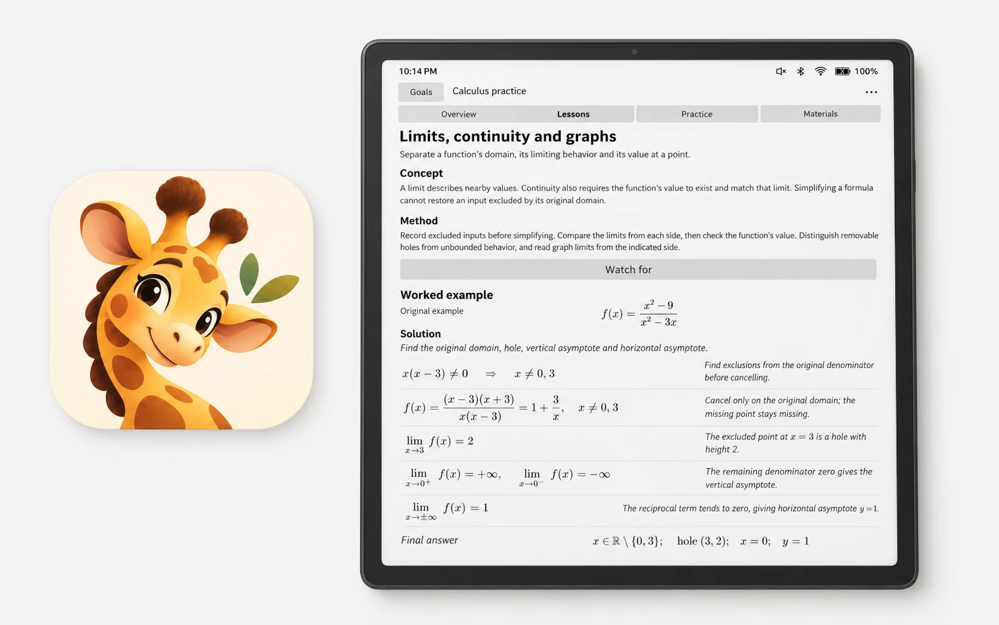
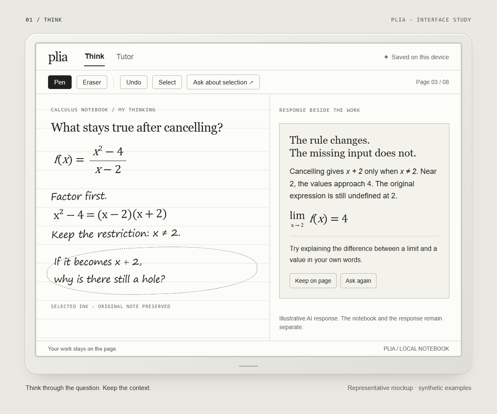
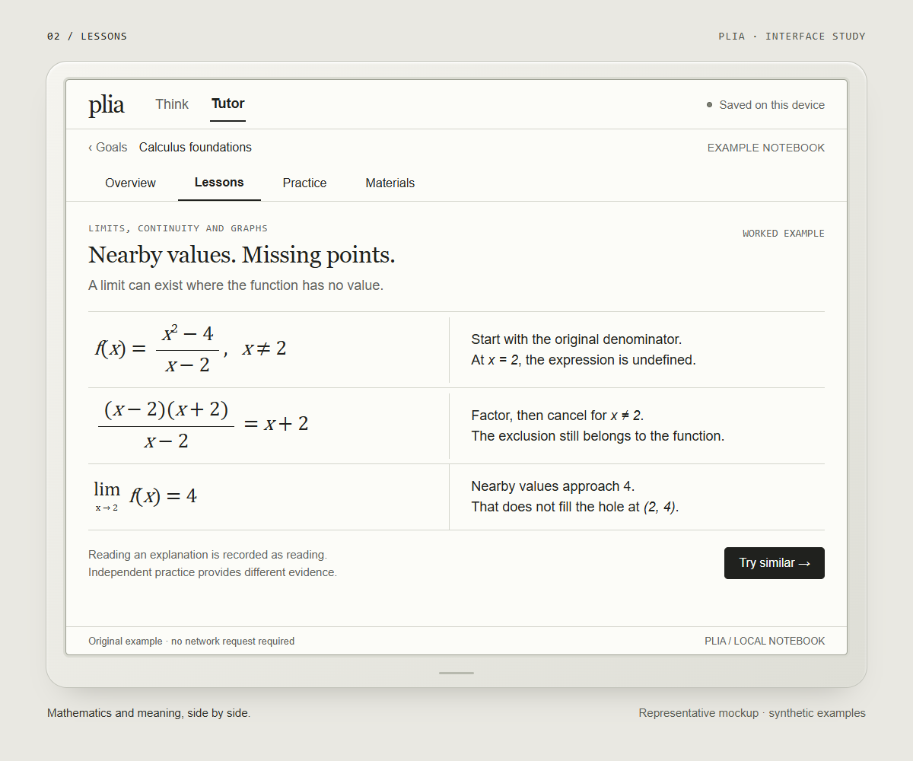
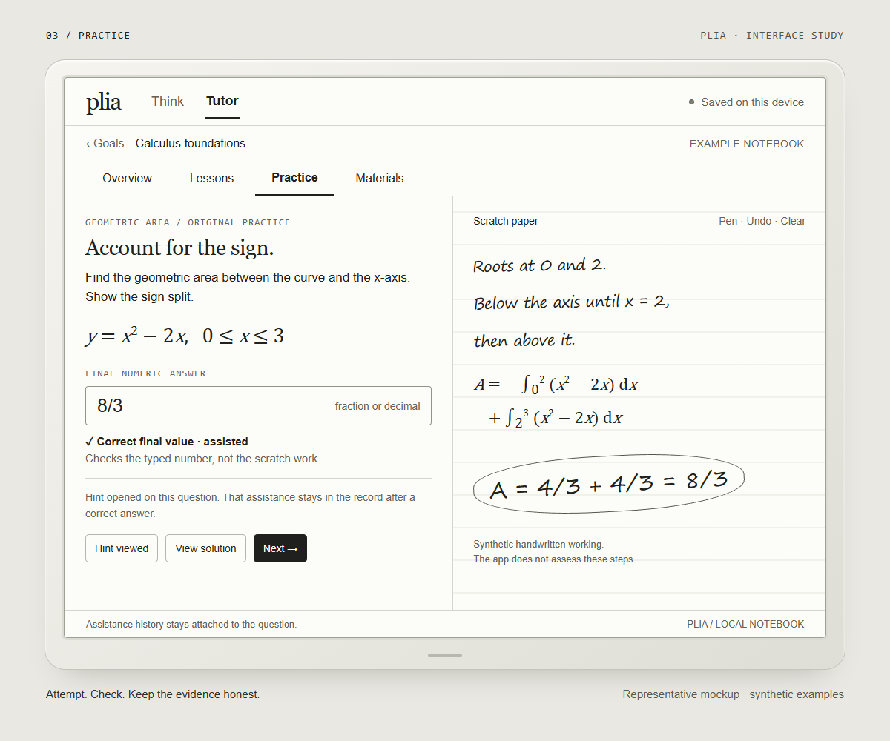
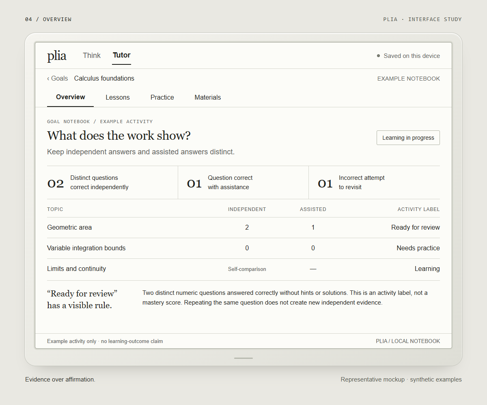

A correct answer has context.
Hints and solution exposure remain in the question's assistance history. A later correct repetition does not erase that history.
Learning tools · Native Android · October 2026
Working prototype · v0.1.23A notebook for what
you can actually do.
A reimagined way to connect thinking, note taking, memorization and practice. Built around one belief: evidence over affirmation.

01 / The starting point
plia began with a practical question: how can handwritten thinking, a useful explanation and the next practice problem belong to the same learning experience?
The prototype grew out of a calculus-study workflow. Writing made reasoning visible; explanations helped unblock it; practice revealed whether the idea could be used independently. Moving between those activities exposed a need for continuity: keep the working, keep the context and keep an honest record of the help involved.
Today, AI can supply a fluent explanation almost instantly. That makes the distinction between assisted performance and independent understanding especially important. Research has found both learning benefits from carefully designed AI tutors and weaker unassisted performance after unrestricted answer assistance. The design of the interaction matters. [8–9]
What if every note could become a starting point for something you can explain, remember or do?
The current app brings together a freeform Think canvas and a structured Tutor. The longer-term direction connects notes to retrieval, review and adaptive practice. This case study keeps that direction separate from the features already present.
02 / The notebook
A quiet surface for doing the work, with support close enough to use and clear enough to question.
The four images below are representative mockups of the experience. They are illustrations, not device screenshots or evidence of additional shipped features. Open an image to inspect it.

Pressure-aware ink, erasing, undo and redo. Select visible ink with a closed loop; keep an optional AI reply separate from the original working.

Ten original calculus lessons pair verbal explanations with typeset mathematics. Local lesson content remains usable without an AI request.

Fourteen bounded practice families, optional scratch paper and saved attempts. Five families check a typed final number; nine require explicit self-comparison.

Goal-specific history preserves attempts and assistance. Activity labels describe the recorded work; they do not certify mastery or predict an exam result.
03 / The core belief
Progress should mean something observable: an explanation produced, a mistake corrected or a problem solved with the help made visible.
Familiarity can feel like understanding. In a classic retrieval study, repeated reading increased confidence, while testing produced better retention after a delay. plia takes that gap seriously. Encouragement has a place; it should accompany a clear account of the work. [1]
Hints and solution exposure remain in the question's assistance history. A later correct repetition does not erase that history.
Checks are deduplicated by attempt. Correct items are counted by their canonical identity, and editing an answer invalidates its earlier assessment.
Automatic checking covers final numeric values. It does not assess handwritten reasoning, mathematical method or general mastery.
In v0.1.23, two distinct correct numeric items completed independently trigger “Ready for review.” Other transparent activity rules produce “Needs practice,” “Practising,” “Learning” or “Not started.” Self-checked symbolic work does not become an automatically verified numeric success.
These are deliberately limited activity labels. The code documents that the counts concern final typed numeric answers, never handwriting or mastery. Inspect TutorStore.java
A source of inspiration
“Neurons that fire together
wire together.”
The familiar shorthand for Hebbian learning offers an intuition: learning involves relationships strengthened through activity. For plia, it inspires repeated, meaningful connections between an idea, an explanation and its use.
The neuroscience is more nuanced. Experiments show that the timing of activity can strengthen or weaken synapses. This is inspiration, not evidence that an app “rewires the brain” or that a study schedule directly follows from a neural rule. The product's learning decisions need human behavioral evidence and their own evaluation. [6]
04 / A deliberate starting surface
A stable page. Space to write. A pace that leaves room to think.
E-ink provides a useful constraint for the first version: legible typography, high contrast, little motion and interactions organized around a page. Its reflective, bistable display can hold a static image without continuous display power. The rest of the device still uses energy. [E Ink technology]
These are design intentions, not automatic properties of an e-ink screen. A small 2013 study found lower fatigue on one e-ink device than on one LCD device; another found no comprehension advantage between print, an e-reader and a tablet. Hardware and reading conditions matter. [7]
“For now” keeps the decision open. The learning model should survive a change of display. Typing must remain useful without a pen, and a future device choice should follow evidence about the learner's needs.
05 / From question to prototype
The product evolved through a sequence of practical questions, interaction decisions and reliability work.
This is a retrospective reconstruction from saved plans, source and handoffs. It is not a verbatim brainstorming transcript. The sequence below describes the documented evolution during October 2026.
The initial question
The first concept separated two modes: Think for open-ended writing and questions; Tutor for a goal, a problem, working and feedback. The ambition was a small notebook for practice.
Decision: build the real prototype as a native Android app for the BOOX surface.
The interaction
Blank paper, a slim toolbar and explicit selection established the working surface. Explanations and mathematical steps could sit alongside one another, with a stacked layout when space was limited.
Decision: keep AI replies as separate objects instead of replacing the learner's marks.
The reliability work
Selection and erasure handling, completed-response parsing, retries, stale callbacks and reply history needed attention before the experience could be trusted. Mathematical rendering and save boundaries were part of the same work.
Decision: treat device checks, local fixtures and successful live AI responses as different kinds of evidence.
The Tutor foundation · v0.1.23
Goal notebooks brought together original lessons, related practice, materials and saved activity. Empty personal goals stay empty; opening a lesson does not count as an independent success.
Decision: preserve the prompt, the attempt and the help used, so the next session can resume with context.
The next questions · planned
Ordered topic units, editable Cornell notes, conceal–retrieve–reveal reflection, flashcards, spaced review and adaptive next steps are the next direction. NotebookLM exchange is also being explored.
Open question: how can support adapt while the evidence remains understandable to the learner?
06 / Research that informs the decisions
A learning tool should be able to explain why it asks you to do something.
The studies below support design hypotheses. They are not studies of plia. Their results cannot be presented as the app's learning gains. Open each entry for the finding, the implication and the limitation.
Roediger and Karpicke (2006) compared restudy and free recall after prose reading. Restudy helped more after five minutes; testing supported better retention after two days or a week, even though restudying increased confidence.
Design implication: ask for an answer before revealing the note. Boundary: a particular study task does not validate every quiz or establish plia's effectiveness.
Read the primary paperCepeda and colleagues (2008) studied more than 1,350 people, with review gaps up to 3.5 months and final tests up to a year later. The most effective review gap depended on how long the information needed to be retained.
Design implication: plan revisits around the learning goal. Boundary: there is no single universal interval, and scheduling is part of plia's roadmap.
Read the primary paperIn a semester-long middle-school language course, Lindsey and colleagues (2014) found that personalized review improved later retention by 16.5% relative to massed review and 10.0% relative to generic spaced review, with review time matched.
Design implication: let observed performance inform an item's next review. Boundary: these are relative gains from one course and scheduler, not percentage-point gains or plia results.
Read the primary paperRohrer and colleagues (2020) randomized 54 seventh-grade mathematics classes to mixed or blocked practice. An unannounced test one month after review favored mixed practice: 61% versus 38%. Primary paper ↗
Separately, Butler and colleagues (2018) found that practicing varied examples improved transfer to new application questions two days later. Primary paper ↗
Design implication: vary relevant examples and require strategy selection. Boundary: these findings do not establish general-purpose adaptability or mean all practice should always be mixed.
Butler, Karpicke and Roediger (2008) found that feedback improved retention of errors and correct answers given with low confidence. In their experiments, retention of low-confidence correct answers doubled with feedback.
Design implication: distinguish confidence from correctness and make feedback specific. Boundary: this does not validate AI grading; an answer key or explanation must still be accurate.
Read the primary paperBi and Poo (1998) studied cultured rat hippocampal neurons. Correlated activity could strengthen or weaken a synapse depending on relative spike timing, initial strength and cell type.
Design implication: Hebbian learning inspires the emphasis on active connections. Boundary: cellular experiments do not prescribe a human study schedule or prove that plia changes a learner's brain in a specific way.
Read the primary paperBenedetto and colleagues (2013) studied 12 adults reading for about 73 minutes per session. Fatigue measures favored a Kindle Paperwhite and print over a Kindle Fire HD. The sample was small and the devices specific. Primary paper ↗
Kretzschmar and colleagues (2013) found no comprehension difference across print, e-reader and tablet in younger and older adults; older readers showed lower measured reading effort on the tablet. Primary paper ↗
Urry and colleagues (2021) also did not find a reliable immediate-learning advantage for longhand note taking in a direct replication. Primary paper ↗
Design implication: choose the surface for the task and test accessibility and comfort. Boundary: neither e-ink nor handwriting guarantees better learning.
Bastani and colleagues (2025) studied nearly 1,000 high-school mathematics students in Turkey. A standard GPT-4 interface improved assisted practice but reduced unassisted exam performance by 17% relative to control, or 5.4 percentage points. A tutor with learning-oriented guardrails largely removed that harm, without a significant unassisted-exam gain.
Design implication: preserve learner attempts, use graduated help and test independently afterward. Boundary: four sessions in one school with specific tools cannot establish that all AI harms learning.
Read the primary paperKestin and colleagues (2025) studied 194 eligible undergraduate physics students. A custom tutor designed around pedagogical principles produced higher immediate post-test scores than the compared active-learning classes. Median tutor time was 49 minutes, versus an assumed 60 minutes of in-class learning.
Design implication: use AI to support purposeful practice and feedback. Boundary: a short intervention and immediate assessment do not establish long-term retention or universal tutor superiority.
Read the primary paperEvidence reviewed 17 October 2026. The research documentation keeps the references and claim boundaries together.
07 / The implementation
The public source captures v0.1.23, the stable prototype verified on the device on 17 October 2026.
The ink surface uses Android View/Canvas, rather than a vendor raw-drawing SDK. The app targets Android SDK 35 with a minimum of 26. Goal-specific local storage keeps question snapshots, drafts, attempts and assistance history; import/export and corrupt-file protection support recovery.
The lesson pack and deterministic practice work without an AI request. New goals do not invent lessons or progress. Original practice content is kept separate from source-material references.
The original companion uses a manual local-file inbox and receipt bridge. Think also has an explicitly activated signed-in model path. Seamless live dot or memory integration is not established.
projects/plia/
├── app/
│ └── src/main/
│ ├── java/com/plia/notebook/
│ │ ├── TutorCatalog.java Content and boundaries
│ │ ├── TutorPracticeEngine.java Bounded practice checks
│ │ └── TutorStore.java Activity and assistance
│ └── assets/ Local lesson assets
├── docs/ Organized project record
├── README.md Start here
└── … Android build configurationThis is an abbreviated map. Read the architecture documentation for the complete responsibilities and data flow.
Development records include host checks for storage, library and UI workflows; generated-practice content checks; mathematical rendering checks; and installation and offline-lesson verification on BOOX. These validate aspects of behavior and presentation.
They do not establish learning outcomes. Physical pen performance, complete lifecycle coverage and live AI round trips remain areas requiring further verification. A separate v0.1.24 integration candidate is not represented here as the installed stable version.
The public package is curated source and documentation. Private notebooks, account state, device backups and supplied assignment PDFs are excluded.
08 / A direction, with open questions
The next step is a dynamic loop: a note becomes a question, a question exposes a gap, and that evidence changes what happens next.
Proposed direction. This full loop is not yet implemented in v0.1.23.
Ordered topic units and editable Cornell cues, notes and summaries. Conceal, retrieve, reveal and reflect; typing remains a first-class option.
Flashcards, review history, spaced repetition and explainable next-step suggestions. Scheduling should be versioned independently of the content.
Supported export/import with tools such as NotebookLM, stable content identities and annotation continuity. Integration needs verification before it becomes a promise.
Adaptability means using an idea when the example or context changes. That calls for varied problems, explanations and choices. Resilience is an ambition for the experience: make errors recoverable, feedback specific and restarting easy. Neither is a measured outcome of plia today.
What would count as progress?
Compare equal study time and equivalent content. Check delayed, unassisted recall and new application problems. Record confidence and assistance separately. Test comfort and accessibility on the actual hardware, and publish uncertainty and null results alongside successes.
09 / Open the notebook
Start with the idea, follow the decisions or go directly to the implementation.
Overview, version, setup and entry points.
Brainstorming & decisionsThe reconstructed process and product questions.
Research & rationalePrimary evidence, implications and boundaries.
ArchitectureCode responsibilities, local data and AI boundaries.
Build & releaseHow the Android source becomes a runnable build.
Status & roadmapWhat exists, what was checked and what comes next.